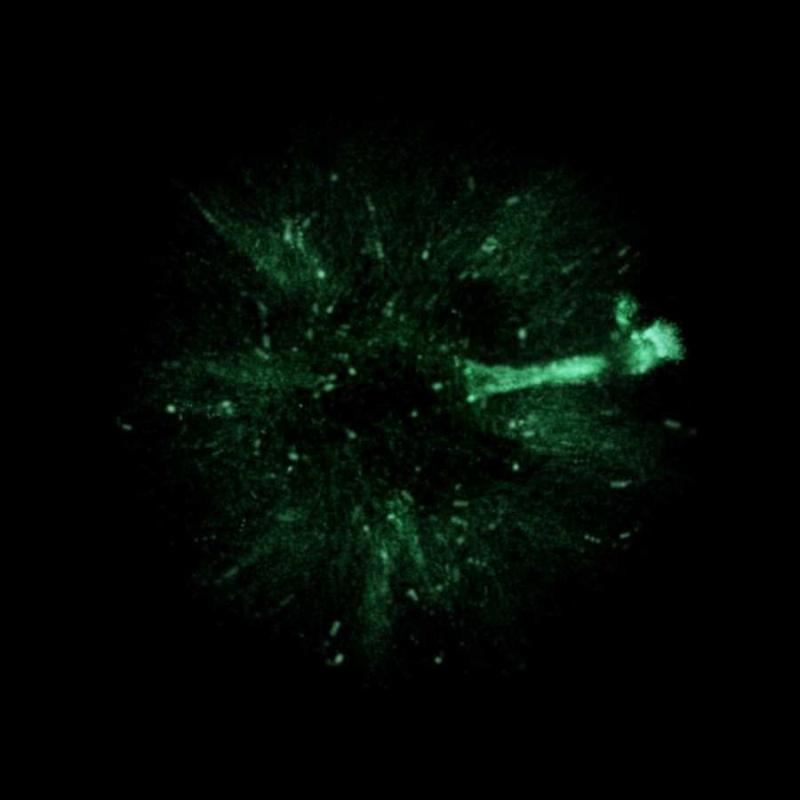

Smoke that listens.
Answers in a breath.
A companion that lives on your desktop, works your apps one approved step at a time, and remembers everything in a vault you own.
heard you 200 ms
Projects/Tower.md recalled
A companion that lives on your desktop, works your apps one approved step at a time, and remembers everything in a vault you own.

Recognition starts the moment you pause. Replies start with a word that is already spoken. People leave about 200 ms between turns; so does COre.

Plain Markdown notes. COre writes, Obsidian edits, Cortex indexes, Syncthing carries them to your other devices. No account, no cloud lock-in.

It reads your apps through Windows UI Automation, plans, acts one step at a time with your OK, and checks the result. The chat has no window: your screen shows through.